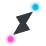

CyberPong
Agent mission control

Run an AI coding team
on your Mac.
CyberPong is local mission control for multi-agent work. Pick a conductor, staff workers with the CLIs you already use, watch the live map, and jump in when something needs a human.
macOS · free to run locally · no vendor API keys stored by the app
Live 3D map
Human console
Job control plane
Cron timeline
Save teams
Local only
What CyberPong can do
Plain English — the things you’ll actually use day to day.
-
1Build a team of agents One conductor plans and assigns. Workers (Claude Code, Grok Build, Hermes, Codex, Kimi, or a custom CLI) do the work in real Terminal windows you can always open.
-
2See the mission live A 3D map shows seats, links, and flow. Floor dots move only when data is actually moving. Hover any seat for status.
-
3Talk to the team without hunting windows The human console sends prompts to the orchestrator and surfaces “needs you” asks when a job waits on input.
-
4Keep handoffs honest Jobs live as files under
~/.pong/. Progress isn’t a guess from chat paste — it’s a control plane you can list, show, and audit. -
5Design how work routes Architecture view: peer vs sub-agent links, snap to orchestrator, save the graph with the team.
-
6Schedule recurring work Cron jobs on a timeline ruler (future into the distance). Manage cadence and which seat owns each job.
-
7Save and reopen lineups Save Team keeps seats, models, and graph. Show Teams opens, focuses, or duplicates a known crew.
-
8Stay local Teams, jobs, ledger, and events stay on your Mac. CyberPong pairs windows and files — it does not store model API keys.
Inside the app
What’s on the mission panel today.
Mission map
Orchestrator, agents, sub-agents, and you — with live status, rings, and directed links.
Watchlist
Surface stuck, off-topic, long-running, or blunt signals so you intervene early.
Architecture editor
Draw peer and sub links. Snap seats. Install templates for soul/skill/policy.
CLI bridge
pong job create, gate, snapshot, ledger — same truth the UI reads.
Focus & Terminal
Open, focus, stow, or terminate seats. Per-worker colors and perms still available.
Cron timeline
3D ruler next to the map plus a left HUD list. Click a pin to edit the job.
Install
-
Clone & setup
git clone https://github.com/kulpio/Agent-Pong.git
cd Agent-Pong && bash scripts/setup.sh --with-skills -
Build the Mac app
bash scripts/build-app.sh --dev && bash scripts/install.sh
Opens CyberPong as/Applications/Pong.app. -
New team — pick a conductor and workers, then send a mission from the human console or the conductor terminal.
Needs macOS 13+, Terminal.app, tmux, and the worker CLIs you want to staff. Full notes: README.
Free to use. Tip if it helps.
Download and run on your machine either way. Tips are optional — same software.
Tips via Stripe (you can change the amount). @DDemnard